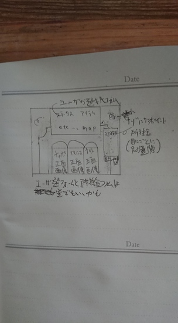
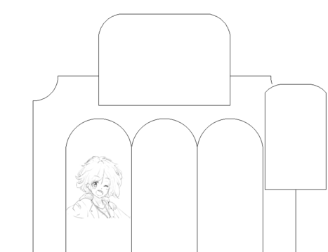
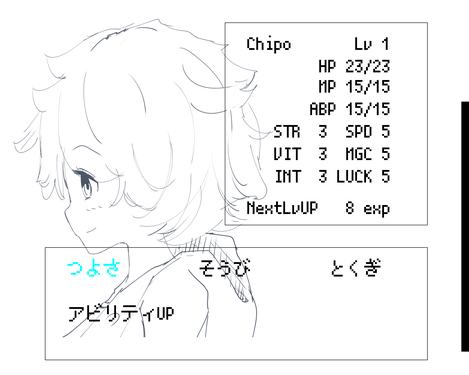

ドキュメント製作者 池本雅也, 作成日 2020年02月08日
採用フォント :
JF-Dot-Shinomoe14
1.ウィンドウサイズ(編集中)
暫定で(2分割線,3分割線, 4分割線,5分割線,6分割線)を同時に描画可能な数値 (59) を
ルートにし、
パディングとして (1), 倍数として (59)ずつ増大させたpixel sizeでウィンドウサイズ
を決定します。
・59 + (1 + 59) + (1 + 59) + (1 + 59) ........
上記のイメージで増大させます。
説明を下記に記述します。
1-1 : 二分割線が描画可能なpixel数に関して
pixel数が3以上の整数で2で割った時に余りが1になる奇数(つまり3より大きい全ての奇
数)であれば、二分割線(中央分割線)を描画することが可能になります。
これから先の文章ではこの時数列の根底として使われる値(今回は3)をroot_num(仮)と
して記述します。
例
・ pixel size (root_num)3 = (1, *1, 1)の場合真ん中の*1が中央の数字であることが
わかります。
これから先の文章では分割線描画のためのこの1を*1というふうに" * "を付けて記述
します。
これから先の文章では、分割線描画のための*1をpadding(仮)として記述します。
・ pixel size 5 = (1, 1, *1, 1, 1)も同様です。
中央までの数は 1 + (n / 2 の商)で求めることが出来ます。
・pixel size 7の場合 (7 / 2) = 3,ですので、中央分割のためのpixelは4pixel目(1
+ 3)となります。構造としては 7 = (3, *1, 3)であり中央の1が分割線描画のためpixel
となります。
これから先の文章内では先頭ピクセルからpaddingまでの(paddingも含めた)pixelの
総和をdivision_pixel(仮)と記述します。division_pixel目のpixelに分割線が描画され
ることになります。
プログラミングによるdivision_pixel算出の流れとしては (行程内の代数nはずつ増大
させる)
行程1,数値がroot_num以上であるかどうかを判定(root_num <= 3); (root_num)3以下
であれば例外処理
行程2,数値が奇数であるかどうかを判定 (n % 2); 答えが1であれば次の行程に進む
、0であれば例外処理
行程3,数値を2で割った商を求める(n / 2);
行程4,行程3の答えに(padding) 1を足す;
となります。
二分割線を描画することが可能なpixel数を維持したままウィンドウサイズを増大させ
る場合は、
3 + 2 + 2 + 2 + 2 + 2 + 2 ...... となりますが、この足す数2の意図は、
(1 + 1)であり、左の項である1は分割線描画のためのpixelに用いられます。
つまり、
(root_num)3 + (1 + 1) + (1 + 1) + (1 + 1) ..... のように増大していくイメージ
のほうがより詳細かと思われます。
1-2 : 二分割線と三分割線が描画可能なpixel数に関して
pixel数が5以上の整数で3で割った時に余りが2になる奇数であれば、二分割線(中央分
割線)と三分割線を描画することが可能になります。つまりroot_numは5です。3より大き
い奇数であり、なおかつ3で割った時の余りが2になる数。
root_num = (3 + 2); // 5
例
・ pixel size 5 = (1, *1, 1, *1, 1)の場合真ん中の2pixel目と4pixel目が三分割線
描画ために使えるpixel(division_pixel)であることがわかります。
・ pixel size 11 = (1, 1, 1, *1, 1, 1, 1, *1, 1, 1, 1)も同様です。
１つめのdivision_pixelの数は (n / 3 の商) + (padding)1 で求めることが出来ます
。
・pixel size 17の場合 (17 / 3) = 5, ですので、１つめのdivision_pixelは6pixel
目(5 + 1)となります。構造としては 17 = (5,*1, 5,*1,5)であり１つめの
division_pixe(つまり6)にさらに6 = (((pading)1 + (root_num)5)を足した12pixel目が
２つめのdivision_pixelとなります。
プログラミングによる算出の流れとしては
行程1,数値がroot_num以上であるかどうかを判定(root_num <= n); (root_num)5以下
であれば例外処理
行程2,数値が奇数であるかどうかを判定 (n % 2); 答えが1であれば次の行程に進む
、0であれば例外処理
行程3,数値を3で割った商を求める(n / 3);
行程4,行程3とpadingの和を求める; １つ目のdivision_pixelを算出
行程5,行程4の答え(division_pixel)に(division_pixel)を足します; 2つ目の
division_pixelを算出
となります。
二分割線を描画することが可能なpixel数を維持したまま、
なおかつ三分割線を描画することが可能なpixel数を維持しウィンドウサイズを増大さ
せる場合は、
(root_num)5 + (1 + 5) + (1 + 5) + (1 + 5) ..... のように増大していくイメージ
です。
1-3 : 二分割線と三分割線と四分割線が描画可能なpixel数に関して
root_num = 11 になります。 (2で割った時の余りが1であり、3で割った時の余りが2で
あり、4で割った時の余りが3である整数の最小)。
例
・ pixel size 11 = (1, 1, *1, 1, 1, *1, 1, 1,*1, 1, 1)。
１つめのdivision_pixelの数は (n / 4 の商) + (padding)1 で求めることが出来ます
。
プログラミングによる算出の流れとしては
行程1,数値がroot_num以上であるかどうかを判定(root_num <= n); (root_num)11以下
であれば例外処理
行程2,数値が奇数であるかどうかを判定 (n % 2); 答えが1であれば次の行程に進む
、0であれば例外処理
行程3,数値を4で割った商を求める(n / 4);
行程4,行程3とpadingの和を求める; １つ目のdivision_pixelを算出
行程5,行程3の答え(division_pixel)に(division_pixel)を足します; 2つ目の
division_pixelを算出
となります。
二分割線を描画することが可能なpixel数を維持したまま、
なおかつ三分割線を描画することが可能なpixel数を維持したまま、
なおかつ四分割線を描画することが可能なpixel数を維持してウィンドウサイズを増大
させる場合は、
(root_num)11 + (1 + 11) + (1 + 11) + (1 + 11) ..... のように増大していくイメ
ージです。
1-4 : 二分割線と三分割線と四分割線と五分割線が描画可能なpixel数に関して
root_num = 59 になります。 (2で割った時の余りが1であり、3で割った時の余りが2で
あり、4で割った時の余りが3であり,5で割った時の余りが4の整数の最小)。
root_num = 59 は6分割線の描画も可能。
１つめのdivision_pixelの数は (n / 5 の商) + (padding)1 で求めることが出来ます
。
プログラミングによる算出の流れとしては。
行程1,数値がroot_num以上であるかどうかを判定(root_num <= n); (root_num)59以下
であれば例外処理
行程2,数値が奇数であるかどうかを判定 (n % 2); 答えが1であれば次の行程に進む
、0であれば例外処理
行程3,数値を4で割った商を求める(n / 5);
行程4,行程3とpadingの和を求める; １つ目のdivision_pixelを算出
行程5,行程3の答え(division_pixel)に(division_pixel)を足します; 2つ目の
division_pixelを算出
となります。
二分割線を描画することが可能なpixel数を維持したまま、
なおかつ三分割線を描画することが可能なpixel数を維持したまま、
なおかつ四分割線を描画することが可能なpixel数を維持してウィンドウサイズを増大
させる場合は、
(root_num) + (1 + 59) + (1 + 59) + (1 + 59) ..... のように増大していくイメー
ジです。
☆遷移1-1....メニュー画面_1,メニューボタン押下直後,項目選択待ち状態,"ステータス"
フォーカス状態

(以下作成途中段階の画像)

☆遷移1-1-1....メニュー画面_1,"ステータス"項目フォーカス状態でEnter押下直後,キャ
クター選択待ち状態,チィポフォーカス状態
☆遷移2-1....ニュー画面_2,選択キャラチィポ押下後,"つよさ" フォーカス時.
(下の画像のフォントはPixelMplus-20130602)

イラスト.... 狐寧(きつねい)
UIデザイン.... ガビ
UIデザイン、プログラミング、ドキュメント編集....contextwin(池本雅也)